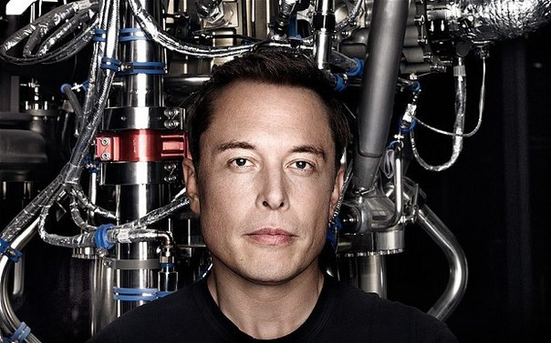
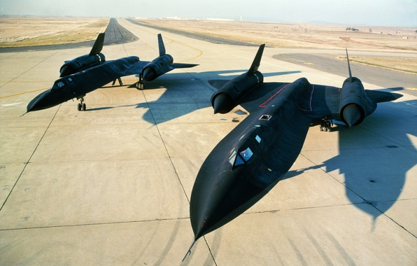

Interesting facts about Elon Musk

Party King
Ilon Musk celebrates its achievementsat parties.
For example, the success of the Falcon 9 mission he noted with the Spacex team at the Cocoa Beach resort (Florida, USA).
Healthy sleep
Mask very carefully refers to sleep,
He even freezes with the help of a smartphone, how many hours he can sleep every day.
On average, he pays to sleep 6 hours a day..


Big toys
Favorite plane.
Elon Musk is a strategic supersonic SR-71, which is unofficially called BlackBird (Black Bird).
The plane was operated from 1964 to 1998.
What to eat
Favorite dishes.
Elon Musk - Potato Fries and Barbecue.Favorite alcoholic drink - whiskey.